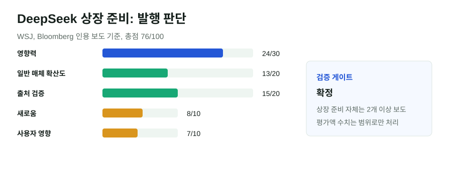

DeepSeek 상장 준비 보도: 중국 AI 경쟁이 자본시장으로 넘어간다
WSJ와 Bloomberg 인용 보도에 따르면 DeepSeek가 2027년 상하이 상장을 목표로 준비 중이다. 회사가 공식 확인한 사안은 아니지만, 복수 주요 경제 매체가 같은 방향을 보도했고 중국 AI 기업의 다음 병목이 모델 공개가 아니라 자본·컴퓨팅 확장이라는 점을 보여준다.
핵심 요약
중국 AI 모델 경쟁은 이제 “누가 더 싸게 만들었나”에서 “누가 더 오래 투자할 수 있나”로 넘어간다
보도들은 DeepSeek가 2026년 말 또는 2027년 초 관련 서류 준비를 목표로 하며, 상하이 시장 상장을 검토한다고 전했다. 평가액과 조달 규모는 매체별 표현이 달라 범위로만 다루는 것이 안전하다.

선정 이유
DeepSeek는 중국 AI 논의에서 모델 성능과 비용의 상징처럼 다뤄져 왔다. 상장 준비 보도는 중국의 오픈 모델 경쟁이 결국 인재 유지, 데이터센터, 칩 접근, 장기 연구비 조달 문제로 이어진다는 점을 보여준다. 기존 GLM·중국 모델 글과도 이어지지만, 이번에는 기술 성능이 아니라 자본시장 관점이다.
점수표
| 기준 | 점수 | 판단 |
|---|---|---|
| 영향력 | 24/30 | 중국 대표 AI 스타트업의 자금 조달·상장 가능성은 글로벌 AI 경쟁에 직접 연결된다. |
| 일반 주요 매체 확산도 | 13/20 | WSJ, Bloomberg 인용 보도, IBD 후속 언급이 확인됐다. 확산도는 높지만 폭발적이지는 않다. |
| 신뢰도/출처 검증 | 15/20 | 복수 경제 매체가 보도했으나 회사는 논평하지 않았다. 수치는 조심스럽게 처리한다. |
| 새로움/중복 회피 | 8/10 | 기존 중국 모델 글과 다른 자본시장 관점이다. |
| 사용자 영향 | 7/10 | 오픈 모델 생태계, 클라우드 비용, 중국 AI 공급망에 간접 영향이 있다. |
| 블로그 적합도 | 4/5 | AI 경쟁을 자금 조달 관점으로 설명하기 좋다. |
| 이미지/도표화 가능성 | 5/5 | 점수표와 자금 흐름 구조로 정리 가능하다. |
검증표
| 검증 항목 | 결과 | 메모 |
|---|---|---|
| 원문 확인 | 부분 확인 | 회사 공식 발표나 거래소 공시는 확인되지 않았다. 보도는 익명 소식통 기반이다. |
| 독립 확인 | 확정 | WSJ와 Bloomberg 인용 보도가 상장 준비라는 핵심 사실을 같은 방향으로 전했다. |
| 전문매체 확인 | 부분 확인 | IBD가 Anthropic·OpenAI IPO 맥락에서 DeepSeek 상장 준비를 함께 언급했다. |
| 반대 확인 | 확정 | DeepSeek가 논평하지 않았고 일정은 규제 승인과 시장 상황에 따라 바뀔 수 있다. |
| 날짜 확인 | 확정 | 주요 보도일은 2026년 7월 14~15일, 이 글 발행은 2026년 7월 16일이다. |
| 수치 확인 | 부분 확인 | 평가액과 조달액은 매체별 환산·표현 차이가 있어 범위와 방향성만 사용했다. |
| 이해관계 | 확정 | 투자자, 은행, 경쟁 AI 기업, 중국 규제당국 이해가 얽힌 단독성 강한 경제 보도다. |
본문 해설
DeepSeek 보도의 핵심은 “상장할 수 있다”보다 “중국 AI 스타트업도 장기 연구와 컴퓨팅 확장을 위해 공개시장 자본을 필요로 한다”는 데 있다. 고성능 모델 경쟁은 연구비, GPU 또는 중국산 가속기 접근, 데이터센터 운영비, 고급 인재 보상으로 이어진다. 모델을 싸게 만들었다는 서사만으로는 다음 세대 경쟁을 오래 버티기 어렵다.
WSJ는 상하이 상장을 논의하고 있으며 2026년 말 서류 제출을 목표로 한다고 보도했다. Bloomberg를 인용한 스페인 Cinco Dias 보도도 2027년 상하이 데뷔 가능성과 추가 자금 조달 논의를 전했다. 다만 회사가 직접 확인한 발표는 아니므로, 평가액이나 정확한 조달 규모는 확정 수치로 쓰지 않는 것이 맞다.
중국 AI 생태계 입장에서는 상장 준비 자체가 신호다. 중국 정부가 AI 스타트업의 상장 문턱을 낮추고, 국부성 자금과 대형 플랫폼 기업이 자금 조달에 참여한다면, 모델 공개 경쟁은 더 큰 자본 경쟁으로 바뀐다. 이는 미국의 OpenAI·Anthropic IPO 논의와 같은 질문으로 이어진다. 프런티어 AI 연구소는 얼마나 큰 손실과 인프라 투자를 공개시장에서 설명할 수 있을까.
반대 해석/주의할 점
이 모듈을 넣은 이유는 상장 보도가 익명 소식통 기반이고 회사의 공식 확인이 없기 때문이다. 상장 준비는 실제 상장과 다르며, 중국 규제 승인, 시장 상황, 회사의 연구 우선 전략에 따라 일정이 달라질 수 있다.
글로벌 시각 vs 한국 시각
글로벌 시장에서는 DeepSeek가 OpenAI·Anthropic과 함께 “AI 연구소의 공개시장 진입”이라는 흐름으로 읽힌다. 한국에서는 중국 오픈 모델의 장기 자금력이 커질 경우 국내 스타트업과 기업용 AI 서비스가 가격 경쟁 압박을 더 받을 수 있다는 점이 중요하다.
이미지/표 참고 링크
외부 로고, 회사 사진, 유료 차트는 사용하지 않았다. 시각 자료는 자체 제작 SVG이며 출처와 재구성 여부를 캡션에 표시했다.
저작권 주의사항
유료 기사와 통신사 기사 문장은 길게 복사하지 않고 요약했다. 수치가 엇갈리는 부분은 확정적으로 단정하지 않았다.
발행 전 확인 포인트
- DeepSeek 공식 발표, 거래소 공시, 중국 규제기관 문서가 나오면 원문 기준으로 업데이트한다.
- 평가액·조달액은 최소 2개 출처에서 일치하기 전까지 단정하지 않는다.
- Anthropic·OpenAI IPO 보도와 묶을 때는 각 회사의 공식 제출 여부를 따로 확인한다.